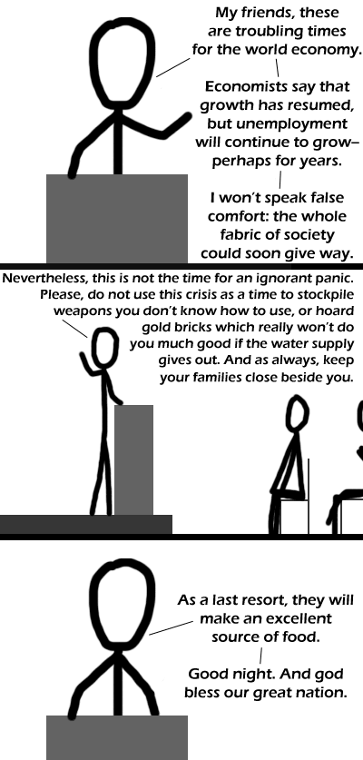

Comic JK 244
When I Feel Like It
⇤
<
?
>
⇥

⇤
<
?
>
⇥
Forum
.
RSS
.
Digg
.
Facebook
.
Reddit
.
Twitter
.
Stumbleupon
Enter your thoughts on number 242 here. Please, no spelling, consistency, or punctuation. This past week, Comic JK was viewed by 0.00067% of the total users of the internet. :) <- again with the gay smileys >Nope, I've just been using my mad lete botnet to make statistical analysis harder. >>That's ok, 90% of the internet is bots anyway. See xkcd 632. The family solves the water problem, too. Ask the Fremen. >Yessss! _Dune_ reference ftw! >>I concur!! DUNE FTW >>>I have my crysknife handy at all times for that. >>>>this webcomics audience = 90% nerds, 90% of people who read dune = nerds, why am i not surprised. Why do all webcomics eventually turn into cannibalism? No, the family can help with the water problem too. Just ask Vlad the Impaler. >>blood is isotonic to the human body, it doesn't replenish your water that efficiently. Neither does seawater, after all >>>And urine? Oh, and the obvious solution: learn to use the weapons. >>>>Realistically, the worst thing that could happen is Zombies, Raptors, or Mammaluigi. >>>>If forced, we *could* get socialist water supplies...by then, people would stop caring about the whole "how is it financed? Really? then I'm not using it, I don't care if it's free" thing.